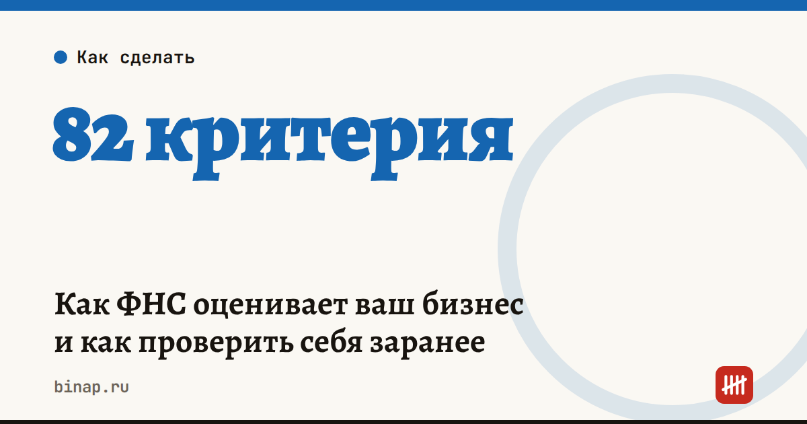

Как ФНС оценивает ваш бизнес и как проверить себя заранее

С 1 января 2026 года ФНС оценивает финансово-хозяйственную деятельность компаний и ИП по единой методике (приказ от 05.12.2025 № ЕД-7-31/1041@). За каждый выполненный критерий бизнес получает баллы. От итоговой оценки зависит, насколько внимательно налоговая смотрит на вас — при проверках, при подаче заявлений, при вопросах банков и крупных заказчиков.
Коротко
- Оценка строится на данных, которые у налоговой уже есть: отчётность, уплата налогов, сведения в реестрах.
- Компания или ИП может сами запросить свою оценку и решить, кому её показать — например, банку или заказчику. По данным ФНС, на этапе «благонадёжность» — 14 критериев для организаций и 10 для ИП.
- ФНС готовит расширение методики: по данным Точки, критериев станет больше — с 57 до 82. Больше всего изменения затронут упрощенцев с НДС.
- Самые частые причины потери баллов — долг по ЕНС, пропущенные сроки отчётности и недостоверные сведения в ЕГРЮЛ или ЕГРИП.
- Проверить себя можно самому за полчаса в личном кабинете налогоплательщика.
Сроки, изменения и разборы для ИП и самозанятых — каждое утро в Telegram и MAX. Подпишитесь, чтобы не пропустить.
На что смотрит налоговая
| Блок | Что проверяют | Как поправить |
|---|---|---|
| Долги | отрицательное сальдо ЕНС | погасить долг, сверить ЕНС |
| Отчётность | декларации и уведомления вовремя | календарь сроков, напоминания |
| НДС на УСН | подаются ли декларации, если доход выше порога освобождения | проверить доход за прошлый год и обязанность по НДС |
| Реестры | адрес, директор, отметки о недостоверности | обновить сведения в ЕГРЮЛ или ЕГРИП |
| Связанные лица | бизнес родственников и партнёров, госзакупки | держать договоры и расчёты между ними в рыночных условиях |
Точный перечень критериев и дату вступления изменений в силу сверяйте с приказом ФНС, когда его опубликуют.
Как проверить себя заранее
- Долги. Откройте личный кабинет налогоплательщика и проверьте сальдо ЕНС. Отрицательное сальдо — первое, что снижает оценку.
- НДС на УСН. Если доход за прошлый год превысил порог освобождения, вы плательщик НДС. Проверьте, что декларации по НДС поданы за все кварталы. Как работает порог — в статье порог НДС для УСН.
- Отчётность вовремя. Пропущенный срок — минус баллы. Все ближайшие даты — в налоговом календаре ИП.
- Адрес и директор. Проверьте выписку из ЕГРЮЛ или ЕГРИП: актуальный адрес, нет отметок о недостоверности.
- Запросите оценку. Работаете с банками или крупными заказчиками — запросите свою оценку заранее, чтобы не узнавать о проблемах от них.
Сами проверяйте и контрагентов до первой оплаты: как бесплатно проверить контрагента.
Частые вопросы
Как узнать оценку своего бизнеса в ФНС? Запросить её может сама компания или ИП. Налоговая оценивает по данным, которые у неё уже есть.
Что больше всего снижает оценку? Долг по ЕНС, пропущенные сроки отчётности и недостоверные сведения в реестре.
Сколько критериев в оценке? По данным Точки, сейчас 57, после расширения методики станет 82. На этапе «благонадёжность», по данным ФНС, — 14 критериев для организаций и 10 для ИП.